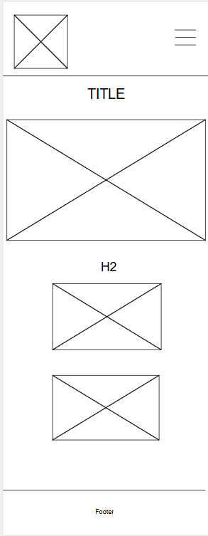
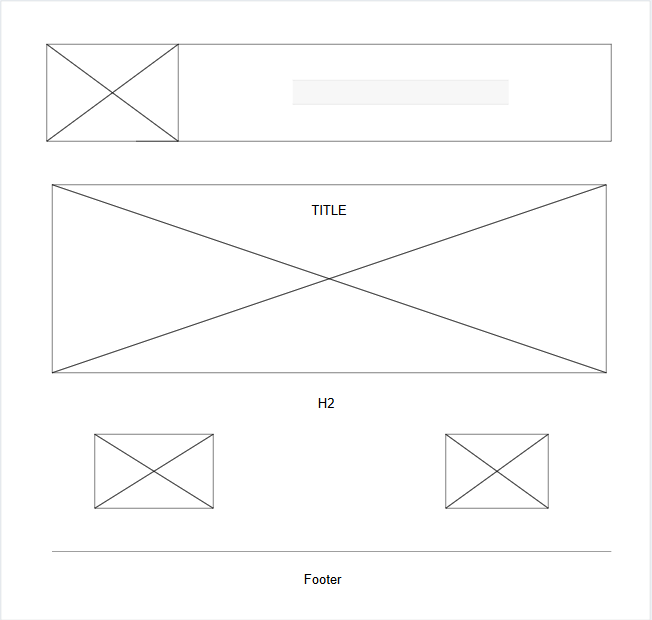

Latinos in Baden-Württemberg
Site Name
The name Latinos in Baden-Württemberg represents a community website for Latin American people living in the Baden-Württemberg region of Germany. It was chosen to highlight the cultural identity and support network for Latinos in this area.
Optional domain availability:latinos-bw.org
Site Purpose
The website will provide information about the region, including cities to visit, walking routes, and opportunities to connect with a community of belonging.
Scenarios
What place can I start to visit in Baden-Württemberg? Where can I find contact information for the club's directors?
Color Schema
- Primary color: #B00020 – Used for header background and important buttons.
- Secondary color: #FF5C5C – Used for body background highlights if necessary.
- Accent color: #000000 – Used for headings and text accents.
- Neutral color: #FFFFFF – Used for body background and paragraph text on dark areas.
Typography
- Open Sans – Used for all content, including headings and body text, to ensure readability and consistency across the site.
Wireframe
Mobile:

Web-page:
